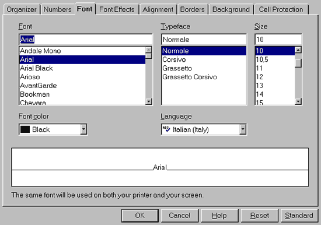
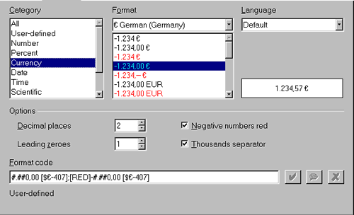
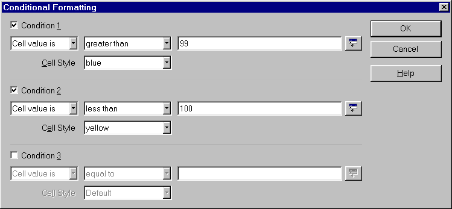
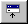

Cum sa folosim
formatarea conditionala (Conditional Formatting) a celulei
Provided from
the OpenOffice.org Documentation Project
Continut
1. Introducere: un exemplu
Sa presupunem ca esti un librar care toata ziua vinde carti. Probabil vrei sa evidentiezi, cu o anumita culoare, numarul cartilor vandule intr-o saptamana, dupa cum urmeaza: daca intr-o saptamana ai vandut mai putin de 100 de carti, celula va fi colorata cu galben, iar daca ai vandut peste 100 de carti, celula va fi colorata cu albastru.
Pentru aceasta, trebuie sa creezi 2 stiluri noi (pentru fiecare culoare cate unul) si doua conditii de formatare: una pentru numerele mai mici decat 100 iar cealalta pentru numerele mai mari sau egale cu 100.
Sa incepem!
2. Crearea unui stil nou
Pentru a crea un stil nou, deschide fereastra Stylist, folosind una din metodele de mai jos:
- alege din meniu Format–Stylist
- sau apasa tasta F11 ,
- sau apasa iconul Stylist aflat pe Function
bar:

In fereastra Stylist, exista numeroase stiluri care pot fi utilizate. Alege stilul Default ca baza pentru noile tale stiluri:
- selecteaza stilul Default ,
- click dreapta pe acest element pentru a afisa meniul contextual,
- alege New...

Fereastra de dialog care este afisata are numeroase tab-uri
asa cum se observa si in captura de ecran. Mai jos poti citi o descriere
a acestor tab-uri:
-
in tab-ul Organizer , atribuie un nume stilului tau; noi l-am denumit 'blue',
-
acum muta-te in tab-ul Background si selecteaza culoarea albastru din paleta de culori,
- muta-te in tab-ul Font , alege Automatic, si apasa OK.
In fereastra Stylist, noul tau stil va fi afisat, cu numele pe care i l-ai atribuit. Repeta pasii descrisi anterior pentru a crea stilul 'yellow'.

Nota: In pasii descrisi de noi, am modificat numai background-ul
(fundalul), dar, dupa cum probabil ti-ai dat seama, poti face mult mai multe
setari in momentul in care definesti sau modifici un stil. Intrand in alte
tab-uri vei avea posibilitatea sa accesezi alte functii utile ca setarea
chenarului (border), modificarea font-ului, aliniamentul, etc.
3. Aplicarea formatarii conditionate
Ai terminat de completat tabelul cu valori, iar acum trebuie sa adaugi ceva culori!
In exemplul nostru, culorile vor fi afisate in celulele [B9]
- Selecteaza celula [B9]
- in meniul Format , alege Conditional Formatting (formatare conditionala)
- In fereastra care apare va trebui sa adaugi conditiile
tale, dupa cum urmeaza:

- la Condition 1, selecteaza 'Cell value is',
- apoi, in al doilea combobox selecteaza 'greater than',
- in ultima celula adauga 99. Eventual poti modifica celula selectata daca apesi butonulShrink 
- Pentru Cell Style, alege stilul 'Blue' ,
- Activeaza acum Condition 2 si repeta pasii descrisi anterior (de la pasul 4 pana la 7), dar utilizeaza 'less than', valoarea '100', si stilul 'yellow' ,
- Apasa OK,
Acum sa vedem rezultatul: scrie '122' in celula [B9] si culoarea se va schimba!

4. Merite
Autor: Sophie Gautier
Multumiri: Richard Holt, contribuitor OOo
Integrat de: Gianluca Turconi
Ultima modificare: January 28, 2002
Contact: OpenOffice.org Documentation Project http://whiteboard.openoffice.org/doc/
Traducere: Romeo Lefter